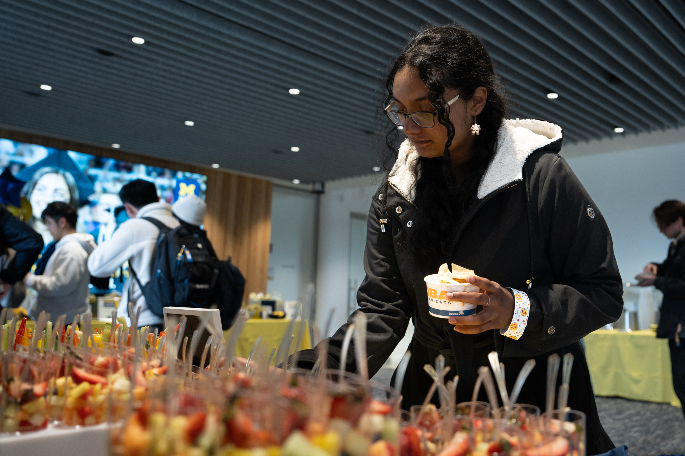
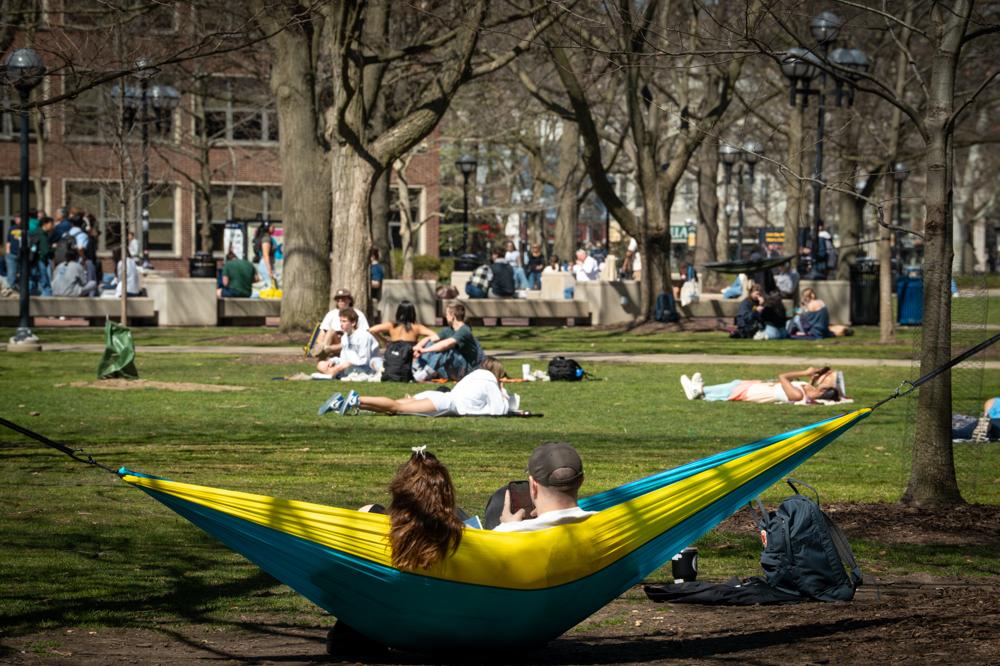

These are some resources to help you live a healthy college life.
Delicious Food at U-M
Eating tasty food can help you:
Food
Eating tasty food boosts happiness, strengthens social connections, encourages mindful enjoyment, and adds variety to your diet.
The Alumni Center provides fresh fruit cups to promote healthy snacking options for students.

Students pick up fruit cups at the Alumni Center.
U-M dining halls offer festive Thanksgiving meals, creating opportunities for students to connect and celebrate together.
A picture of East Quad Thanksgiving 2024.
The Alumni Center hosts Welcome Wednesdays, where students receive bagels and other treats as a warm gesture of support.
Bagel stickers given out during Welcome Wednesdays.
Finding Peace in the Diag
Actively engaging with natural environments, like parks, forests, or even a backyard, can have numerous positive effects on mental and physical health.
The Diag’s beautiful flowers create a peaceful and visually soothing environment for students.
Beautiful purple flowers decorate the lawn of the Diag on a cloudy day.
The shade under trees in the Diag provides a perfect spot for relaxation and casual gatherings.
Students enjoy the shade under trees in the Diag.
On sunny days, the Diag becomes a great spot where students can relax and unwind in the grass.

Students enjoy a nice day by relaxing in the grass of the Diag.